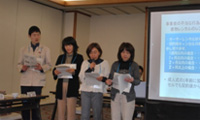
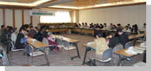

第2回県内消費者団体交流会 報告
- 【日時】
- 12月1日（水）11：00～15：30
- 【場所】
- さいたま共済会館602
- 【参加団体】
- 県内消費者団体：22団体(52人)
- 上尾市消団連、越谷市消団研、さいたま市消団連、狭山市消団連、所沢市消団連、西部地区消費者団体活動推進世話人会、朝霞市くらしの会、桶川市くらしの会､加須市くらしの会、久喜市くらしの会､志木市くらしの会、白岡町くらしの会、秩父市くらしの会、めぬまくらしの会、埼玉消費者被害をなくす会、埼玉県地域婦人会連合会、新日本婦人の会埼玉県本部、埼玉母親大会連絡会、埼玉公団住宅自治会協議会、埼玉県生活協同組合連合会、埼玉県消費者団体連絡会 ※資料のみ提供 17団体
【行政担当課】埼玉県消費生活課、ふじみ野市市民相談･人権推進室、さいたま市消費生活総合センター
『消費者団体活動の広がり・つながり』活動の紹介
久喜市くらしの会 宮内会長
1969年設立、平成22年度より旧久喜市、栗橋町、鷲宮町、菖蒲町と統合し、どう取り組むかが課題でした。総会・理事会等の会議、講演会･研修会の開催や社会見学、消費者大会･全国消費者フォーラムへの参加、市の行政環境福祉協議会に所属しながら、リサイクル活動など環境の取組み、祭りなどの久喜市事業の参加、介護施設の毎月のボランティア活動などの福祉活動、広報発行や親睦旅行、また福祉総合振興計画審議会をはじめ5つ以上の審議会、行政や関係団体事業の参加など、多くの事業があります。学習会で学んだ内容や情報は、理事会報告以外にもPRに努め、また参加の際は、自分は消費者団体の一員である自覚を持つことを確認しています。行政の担当課は異動がありますので、理解を深めていただくために何度も話し合うことが大切です。消費者被害をなくす会との連携では、地元で消費者被害防止の学習会を共催することで会員の意識向上につながっています。
埼玉消費者被害をなくす会 伊藤専務理事
私たち消費者は経済的不利益をも被ることがある弱い立場です。日本では、2004年消費者基本法が出来、5年単位で計画を作っています。平成20年国民生活白書を内閣府が発表しましたが、消費者市民が積極的に参加して社会をより良くし、消費者の利益と権利が尊重される公正で健全な消費社会でなければなりません。消費者の安全や選ぶ権利など当たり前の利益が確保された後、事業者側は切磋琢磨し合うことが経済の発展につながるのではないでしょうか。事業者が消費者から信頼があれば消費者問題は起こりません。事業者の責務も果たされなければなりません。消費者力で一番大切なのは適切な商品を選ぶ力です。ヨーロッパの消費者が主にしているのが事業者に対しての申し入れ、訴訟と商品テスト誌の発行です。なくす会も関東で初めて着物レンタル事業者に対しての差止請求訴訟を提訴、和解内容は全面的になくす会側の主張が認められました。消費者だけでなく、悪質でない真面目な事業者にとっても歓迎できる事です。消費者の権利が守られる社会づくり、社会が消費者基本法の通りになるように消費者団体は働きかけをしていきましょう。

適格消費者団体NPO法人埼玉消費者被害をなくす会 活動委員4名・事務局1名
「差止請求訴訟」について、実際5月に着物レンタル事業者を提訴し、キャンセル条項を改善させた事例を、分かりやすく寸劇風にアレンジした形で報告しました。

■各団体の活動交流
＜上尾市消団連＞
講演会は年2回開催。消費者被害防止キャンペーンを年2回参加。各団体交流の中で商品研究活動に取り組んでいます。
＜越谷市消団研究会＞
記念講演会を開催、消費者大会参加、環境と食品添加物に関心を持つ団体です。
＜さいたま市消団連＞
新都心で開催した消費生活展に参加。岩槻くらしの会と行政との｢さいたま市消費者フォーラム｣を共催、パネルディスカッションに80人参加しました。
＜狭山市消団連＞
5団体の組織。講演会「遺伝子組み換え食品」、地場野菜の調理講習会、所沢有機農法の見学をしました。
＜所沢市消団連＞
消費者被害をテーマに消費生活展準備中。講演は｢金融被害｣について、展示は市役所ホールで行います。
＜西部地区消費者団体活動推進世話人会＞
自治体別の団体との交流をしています。消費者庁の方を呼んで、地道に活動している団体の考えなどを聞いてもらうと良い。
＜桶川市くらしの会＞
市の広報に25年連続「くらしのワンポイント」掲載に対し、感謝状をいただきました。消費生活展で食品表示について発表しました。
＜加須市くらしの会＞
山梨への生産工場視察研修、健康体操や折り紙講座等を実施。別市内の生産者・工場めぐり、セミナーとしてリサイクル講座開催。合併後、各くらしの会は連絡会の形になっています。
＜志木市くらしの会＞
Y化粧品工場に視察研修。消費生活セミナーを、老人会や婦人会等に参加を呼びかけて開催。小3～6年を対象に｢子ども消費者教室｣を開催。
＜白岡町くらしの会＞
千葉の納豆や明太子の工場を視察研修。寝たきりにならないように健玉教室を町のボランティアの力を借りて年7回開催。
＜秩父市くらしの会＞
設立42年目の会。牛乳パックやトレーの回収などを会の発足以来継続。環境市民会議に参画。地産地消運動で秩父市産米キヌヒカリをエコバッグで配布。
＜めぬまくらしの会＞
今回初めて参加。｢彩のかがやき｣への不良に直面。米粉による団子や五平餅作りなどの料理教室で米消費拡大。県民意識を上げたいところ。
＜さいたまコープ＞
食と商品に関する取組み、子育て応援、くらしの助け合いの会、食事会やふれあい喫茶、｢子ども環境教室｣、平和の取組みも行っています。
※幹事団体からも会の説明と活動の紹介がありました。
■意見交換
高齢化・会員減少、消費生活展、補助金、消費生活センターなどについて意見交換しました。
■まとめ(伊藤代表幹事・事務局長)
委託事業のおかげもあり多くの団体に集まって頂き、楽しく和やかに開催できました。県内市町村約80団体の内、参加、資料提供団体でこの約半数で交流していることになります。消費者団体が連携して意見をまとめ要請することは、消費者の利益権利を確保していく重要な鍵になるのではないかと思います。この交流を皆さんの更なるに力にし、相互に学びあっていただければと思います。
■閉会あいさつ 滝澤幹事
地域で各団体がパートナーとして期待されている中、どういう交流が良いのか、何を話し合ったら良いのか、どんなテーマが私たちの課題なのかを考えて、運営進行することが大切だと感じました。まだ回数は少ないですが、今後良い活動になっていったら良いと思います。地域に帰って自信を持って活躍してください。